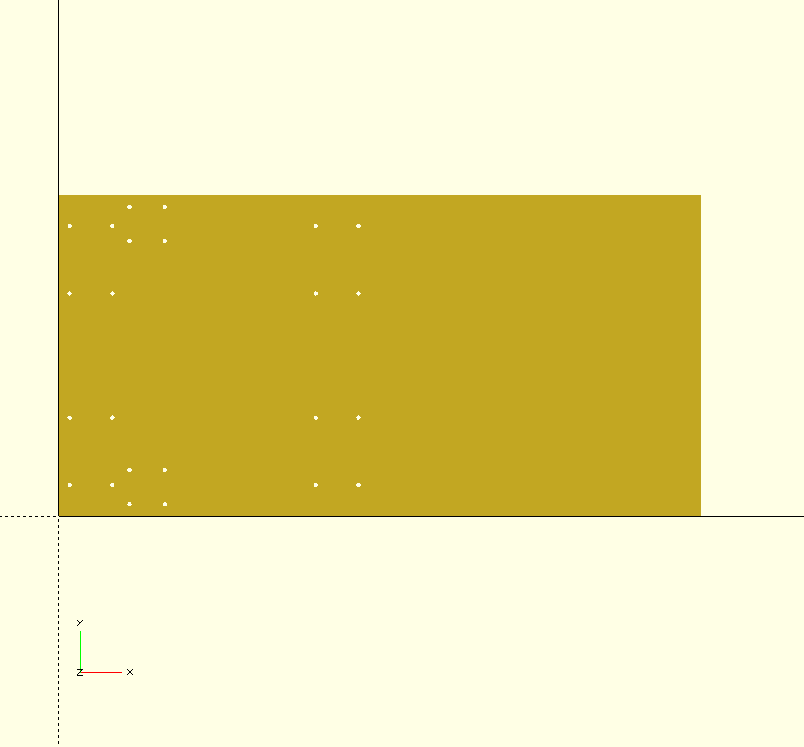
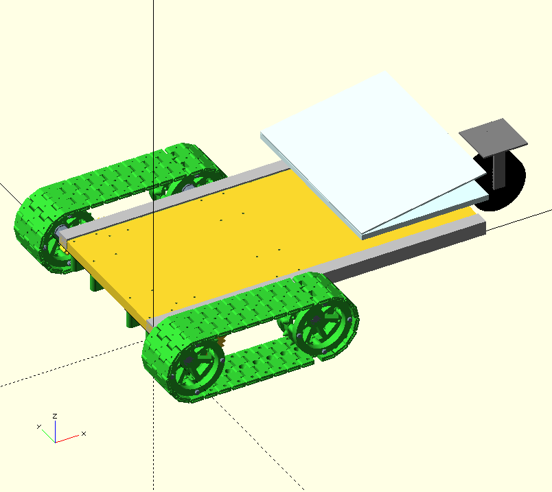

Last update on 20 April 2017.
Parts needed
| Name | Quantity | Where to use |
|---|---|---|
| Platform sheet | 1 | Sheet on which everything is built |
| DC motors with planetary gears | 2 | Moving the platform |
| Motor gear | 2 | On motor |
| Tracks | 66 | |
| Cart wheel | 1 | back side |
| L profile 600x25x25mm, 3mm thick | 2 | Reinforcement for sheet |
| M12x150 hexa screw | 4 | Shaft for wheels |
| M12 long nut | 8 | Spacer for wheels |
| Radial bearing 6201rs | 8 | Shaft support |
| Radial bearing housing 6201 | 8 | Shaft support |
| M4x60 sunken screw | 16 | Fix the 6201 bearing housing |
| M12 autolock nut | 4 | Fix shaft after the 1st radial bearing |
| Washer 12x24 | 12 | Wheel shaft |
| M4x70 cylindric head | 16 | Wheel build |
| M4 autolock nut | 16 | Wheel build |
| Wood screw 40mm | 10 | Fixing reinforcement profile to sheet |
| M4x25 | 10 | Fixing reinforcement profile to sheet |
| M4x25 sunken | 8 | Fixing the motor housing to platform |
| M4 autolock nut | 8 | Fixing the motor housing to platform |
| 4x12 washer | 8 | Fixing the motor housing to platform |
| M4x10 sunken screw | 8 | Fixing the motor to housing |
| Rectangular tube 10x10mm, 2mm wall | 4 | Bridge between platform sheet and cart wheel |
| M4x30 hexa screw | 4 | Fixing the cart wheel to tubes |
| M4 autolock nut | 4 | Fixing the cart wheel to tubes |
| 4x12 washer | 8 | Fixing the cart wheel to tubes |
| M4x50 hexa screw | 4 | Fixing the bridge tubes to platform |
| M4 autolock nut | 4 | Fixing the bridge tubes to platform |
| 4x15 washer | many | Spacer between bridge tubes and sheet |
Platform sheet
BOTTOM SIDE
first shaft first bearing [10, 29]
first shaft first bearing [50, 29]
first shaft second bearing [10, 92]
first shaft second bearing [50, 92]
second shaft first bearing [240, 29]
second shaft first bearing [280, 29]
second shaft second bearing [240, 92]
second shaft second bearing [280, 92]
motor housing holes [66, 43]
motor housing holes [99, 43]
motor housing holes [66, 11]
motor housing holes [99, 11]
TOP SIDE
The same as the bottom side, but the measurements are made from the other side.
Final assembly
